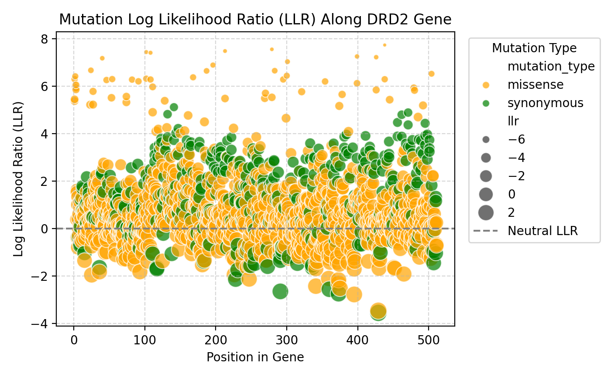
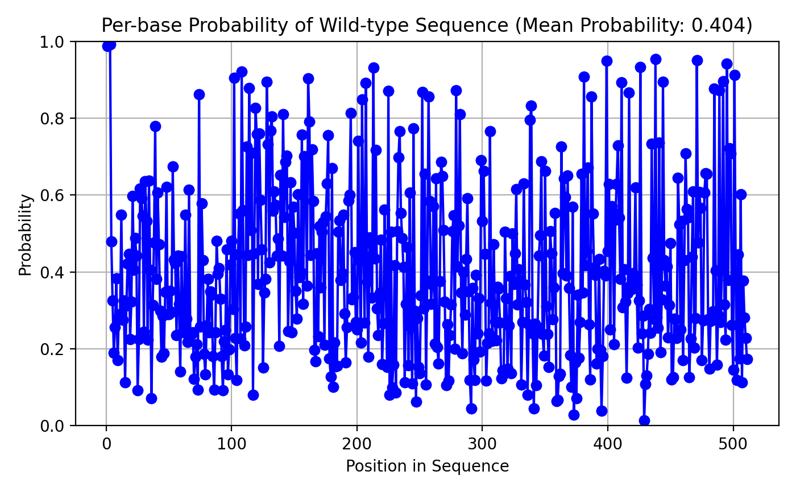

3 Evaluating DNA Language Models
3.1 Introduction
In Chapters 1 and 2, we introduced the process of preparing DNA sequences and training a BERT language model for genomic data. In this chapter, we will turn our attention to how single nucleotide mutations can be systematically generated and evaluated using the trained DNA language model.
These synethetic mutations can form the basis for an evaluation of our DNA language model.
This chapter has two goals:
To explain to machine learning readers how to enumerate synonymous and missense mutations based on the standard genetic code, and why this is biologically meaningful. Consider the Kahn Academy “ap bio” course if this chapter doesn’t really offer enough for you https://www.khanacademy.org/science/ap-biology
To explain to bioinformatics and genetics readers how the Masked Language Modeling (MLM) objective provides a way to compute the pseudo-log-likelihood (PLL) of entire sequences and to score mutations in terms of their “naturalness” under the trained model.
3.2 Biological Background: The Genetic Code and Mutation Types
Before diving into code, it’s useful to recall the basics of how DNA encodes proteins. DNA is transcribed into RNA, and RNA is translated into proteins using codons, groups of three nucleotides. Each codon corresponds to a specific amino acid — this mapping is called the genetic code.

Crucially, some amino acids can be encoded by multiple codons, a property called degeneracy. This degeneracy is why synonymous mutations exist — changes in the DNA sequence that do not alter the resulting amino acid. In contrast, missense mutations alter the encoded amino acid, which may change protein function.
This distinction between synonymous and missense mutations will allow us to systematically categorize the impact of each possible single nucleotide substitution. Below is the standard genetic code table:
| Codon | Amino Acid | Codon | Amino Acid | Codon | Amino Acid | Codon | Amino Acid |
|---|---|---|---|---|---|---|---|
| TTT | F | TTC | F | TTA | L | TTG | L |
| TCT | S | TCC | S | TCA | S | TCG | S |
| TAT | Y | TAC | Y | TAA | Stop | TAG | Stop |
| TGT | C | TGC | C | TGA | Stop | TGG | W |
| CTT | L | CTC | L | CTA | L | CTG | L |
| CCT | P | CCC | P | CCA | P | CCG | P |
| CAT | H | CAC | H | CAA | Q | CAG | Q |
| CGT | R | CGC | R | CGA | R | CGG | R |
| ATT | I | ATC | I | ATA | I | ATG | M |
| ACT | T | ACC | T | ACA | T | ACG | T |
| AAT | N | AAC | N | AAA | K | AAG | K |
| AGT | S | AGC | S | AGA | R | AGG | R |
| GTT | V | GTC | V | GTA | V | GTG | V |
| GCT | A | GCC | A | GCA | A | GCG | A |
| GAT | D | GAC | D | GAA | E | GAG | E |
| GGT | G | GGC | G | GGA | G | GGG | G |
A single nucleotide mutation can cause:
- A synonymous mutation: The amino acid does not change, meaning the mutation is “silent” in terms of protein sequence.
- For example in row 1 pf the table we see that if we mutate the codon TTT to TTC both before and after the mutation the amino-acid F (phe) is produced. While its not guaranteed by any means that a synonymous mutation is entirely harmless their very likely to be harmless.
- A missense mutation: The amino acid changes, potentially altering protein structure and function.
- For example in row 1 pf the table we see that if we mutate the codon TTT to TTA the amino-acid F (phe) is replaced by L (leu) in the protein, potentially changing the function. While missense mutations aren’t always damaging, they are fare more likely to be damaging.
Earlier we trained a DNA language model on coding sequences for humans, ad I actually expanded that to a training run of 2 epochs (the data was all used twice) on 500k sequences from 13 vertebrae species. This model should, with probabilities slightly above chance,
3.3 Enumerating All Single-Nucleotide Mutants
The code in this section systematically generates every possible single nucleotide substitution across the input sequence. Since each codon consists of three nucleotides, and each nucleotide can mutate into three alternatives, there are up to 9 potential codon variants for each original codon.
The data generated by applying this “mutator” to the DRD2 (Dopamine receptor D2) gene is on huggingface: https://huggingface.co/datasets/MichelNivard/DRD2-mutations
For each mutation, we check the original amino acid and the new amino acid using the standard genetic code table. This allows us to classify each mutation as either:
Synonymous — Same amino acid, no apparent change to the protein.
Missense — Different amino acid, potential change to protein function.
This step is crucial in genomics, where we often want to prioritize functional variants — mutations that actually change protein products, rather than silent changes that do not.
I have a preference for R myself, so I wrote this specific job in R.We provide the gene sequence, starting at the start codon, I use the dopamine receptor gene DRD2. Based on the genetic code, which translates DNA to the amino-acids that eventually are produced, we then write code to mutate each codon in a gene.
DRD2 <- "ATGGATCCACTGAATCTGTCCTGGTATGATGATGATCTGGAGAGGCAGAACTGGAGCCGGCCCTTCAACGGGTCAGACGGGAAGGCGGACAGACCCCACTACAACTACTATGCCACACTGCTCACCCTGCTCATCGCTGTCATCGTCTTCGGCAACGTGCTGGTGTGCATGGCTGTGTCCCGCGAGAAGGCGCTGCAGACCACCACCAACTACCTGATCGTCAGCCTCGCAGTGGCCGACCTCCTCGTCGCCACACTGGTCATGCCCTGGGTTGTCTACCTGGAGGTGGTAGGTGAGTGGAAATTCAGCAGGATTCACTGTGACATCTTCGTCACTCTGGACGTCATGATGTGCACGGCGAGCATCCTGAACTTGTGTGCCATCAGCATCGACAGGTACACAGCTGTGGCCATGCCCATGCTGTACAATACGCGCTACAGCTCCAAGCGCCGGGTCACCGTCATGATCTCCATCGTCTGGGTCCTGTCCTTCACCATCTCCTGCCCACTCCTCTTCGGACTCAATAACGCAGACCAGAACGAGTGCATCATTGCCAACCCGGCCTTCGTGGTCTACTCCTCCATCGTCTCCTTCTACGTGCCCTTCATTGTCACCCTGCTGGTCTACATCAAGATCTACATTGTCCTCCGCAGACGCCGCAAGCGAGTCAACACCAAACGCAGCAGCCGAGCTTTCAGGGCCCACCTGAGGGCTCCACTAAAGGAGGCTGCCCGGCGAGCCCAGGAGCTGGAGATGGAGATGCTCTCCAGCACCAGCCCACCCGAGAGGACCCGGTACAGCCCCATCCCACCCAGCCACCACCAGCTGACTCTCCCCGACCCGTCCCACCATGGTCTCCACAGCACTCCCGACAGCCCCGCCAAACCAGAGAAGAATGGGCATGCCAAAGACCACCCCAAGATTGCCAAGATCTTTGAGATCCAGACCATGCCCAATGGCAAAACCCGGACCTCCCTCAAGACCATGAGCCGTAGGAAGCTCTCCCAGCAGAAGGAGAAGAAAGCCACTCAGATGCTCGCCATTGTTCTCGGCGTGTTCATCATCTGCTGGCTGCCCTTCTTCATCACACACATCCTGAACATACACTGTGACTGCAACATCCCGCCTGTCCTGTACAGCGCCTTCACGTGGCTGGGCTATGTCAACAGCGCCGTGAACCCCATCATCTACACCACCTTCAACATTGAGTTCCGCAAGGCCTTCCTGAAGATCCTCCACTGCTGA"}
nchar(DRD2)/3
# Genetic code table (Standard Code)
genetic_code <- c(
"TTT"="F", "TTC"="F", "TTA"="L", "TTG"="L",
"TCT"="S", "TCC"="S", "TCA"="S", "TCG"="S",
"TAT"="Y", "TAC"="Y", "TAA"="Stop", "TAG"="Stop",
"TGT"="C", "TGC"="C", "TGA"="Stop", "TGG"="W",
"CTT"="L", "CTC"="L", "CTA"="L", "CTG"="L",
"CCT"="P", "CCC"="P", "CCA"="P", "CCG"="P",
"CAT"="H", "CAC"="H", "CAA"="Q", "CAG"="Q",
"CGT"="R", "CGC"="R", "CGA"="R", "CGG"="R",
"ATT"="I", "ATC"="I", "ATA"="I", "ATG"="M",
"ACT"="T", "ACC"="T", "ACA"="T", "ACG"="T",
"AAT"="N", "AAC"="N", "AAA"="K", "AAG"="K",
"AGT"="S", "AGC"="S", "AGA"="R", "AGG"="R",
"GTT"="V", "GTC"="V", "GTA"="V", "GTG"="V",
"GCT"="A", "GCC"="A", "GCA"="A", "GCG"="A",
"GAT"="D", "GAC"="D", "GAA"="E", "GAG"="E",
"GGT"="G", "GGC"="G", "GGA"="G", "GGG"="G"
)
# Function to get all mutations for a codon
mutate_codon <- function(codon, codon_index, full_sequence) {
nucleotides <- c("A", "T", "C", "G")
mutations <- data.frame()
original_aa <- genetic_code[[codon]]
for (pos in 1:3) {
original_base <- substr(codon, pos, pos)
for (nuc in nucleotides) {
if (nuc != original_base) {
# Mutate the codon at this position
mutated_codon <- codon
substr(mutated_codon, pos, pos) <- nuc
mutated_aa <- genetic_code[[mutated_codon]]
# Create the mutated sequence
mutated_sequence <- full_sequence
start <- (codon_index - 1) * 3 + 1
substr(mutated_sequence, start, start+2) <- mutated_codon
mutation_type <- if (mutated_aa == original_aa) "synonymous" else "missense"
mutations <- rbind(mutations, data.frame(
codon_index = codon_index,
position = pos,
original_codon = codon,
mutated_codon = mutated_codon,
original_aa = original_aa,
mutated_aa = mutated_aa,
mutation_position = (codon_index -1)*3 + pos,
mutation_type = mutation_type,
sequence = mutated_sequence
))
}
}
}
return(mutations)
}THen we write code to mutate all codons within the gene and save all the mutations, and add a column that indicates whether their missense or synonymous mutations.
# Main function to process the whole sequence
mutate_sequence <- function(dna_sequence) {
codons <- strsplit(dna_sequence, "")[[1]]
codons <- sapply(seq(1, length(codons), by=3), function(i) paste(codons[i:(i+2)], collapse=""))
all_mutations <- data.frame()
for (i in seq_along(codons)) {
codon <- codons[i]
mutations <- mutate_codon(codon, i, dna_sequence)
all_mutations <- rbind(all_mutations, mutations)
}
return(all_mutations)
}
# Example usage
sequence <- DRD2
mutations <- mutate_sequence(sequence)
# Filter synonymous and missense if needed
synonymous_mutations <- subset(mutations, mutation_type == "synonymous")
missense_mutations <- subset(mutations, mutation_type == "missense")
source <- c(NA,"wildtype",DRD2)
output <- rbind(source,mutations[,7:9])
write.csv(file="DRD2_mutations.csv",output)The code can be used to generate massive amounts of mutations for validation, but missense vs synonymous is a very simple and crude distinction to make! to fully validate a DNA model we’ll want to obtain additional external information and well do so in later chapters!
3.4 Evaluating base position likelihoods with a BERT Model
In machine learning terms, the MLM loss is the negative log likelihood (NLL) of the correct nucleotide. For example, if the correct nucleotide is “A” at a given position, and the model assigns “A” a probability of 0.8, then the contribution to the loss is:
\[loss = −ln(0.8) = 0.22\]
The lower this value, the better the model’s confidence matches reality — indicating that the nucleotide was expected. Near the end of training our models loss hovered around 1.09, meaning that the average true base had a predicted probability of ±34%. The loss is highly dependent on the tokenizer, for example if we would have used a more complex tokenizer with say 100 options for each next token (encoding for example all 3-mer combinations of bases: A,C,T,G,AA,AC,AT,AG etc etc until GGA,GGG) the the probability of geting the one correct token is way lower as the base rate is way lower!
When we compute the pseudo-log-likelihood (PLL) for an entire sequence, we mask and score each position, adding up these log probabilities:
\[logP(nucleotide1)+logP(nucleotide2)+⋯+logP(nucleotiden)\]
This sum is the total log likelihood of the sequence under the model — it quantifies how natural the model thinks the sequence is.
First we load the model I trained in Chapter 2, if you trained your own on more data, or for longer, or want to evaluate a different model you can load those yourself easily.
from transformers import AutoTokenizer, AutoModelForMaskedLM
import torch
import pandas as pd
# Load model & tokenizer
model_name = "MichelNivard/DNABert-CDS-13Species-v0.1" # Replace if needed
tokenizer = AutoTokenizer.from_pretrained(model_name)
model = AutoModelForMaskedLM.from_pretrained(model_name)
model.eval()
device = torch.device("cuda" if torch.cuda.is_available() else "cpu")
model.to(device)
# Maximum context length — BERT's trained context window
MAX_CONTEXT_LENGTH = 512Then we define 2 functions to compute the pseudo likelihood of the whole sequence up to 512 bases as that is the sequence length we trained DNABert for (in full scale applications you’d use a longer sequence length) and 2. the log likelihood ratio of the mutation vs the wildtype (original DRD2 sequence).
def compute_log_likelihood(sequence, tokenizer, model):
"""Compute pseudo-log-likelihood (PLL) for the first 512 bases."""
tokens = tokenizer(sequence, return_tensors='pt', add_special_tokens=True)
input_ids = tokens['input_ids'].to(device)
attention_mask = tokens['attention_mask'].to(device)
log_likelihood = 0.0
seq_len = input_ids.shape[1] - 2 # Exclude [CLS] and [SEP]
with torch.no_grad():
for i in range(1, seq_len + 1):
masked_input = input_ids.clone()
masked_input[0, i] = tokenizer.mask_token_id
outputs = model(masked_input, attention_mask=attention_mask)
logits = outputs.logits
true_token_id = input_ids[0, i]
log_probs = torch.log_softmax(logits[0, i], dim=-1)
log_likelihood += log_probs[true_token_id].item()
return log_likelihood
def compute_mutant_log_likelihood_ratio(wild_type, mutant, position, tokenizer, model):
"""Compare wild type and mutant likelihood at a single position (within 512 bases)."""
assert len(wild_type) == len(mutant), "Wild type and mutant must have the same length"
assert wild_type[position] != mutant[position], f"No mutation detected at position {position + 1}"
tokens = tokenizer(wild_type[:MAX_CONTEXT_LENGTH], return_tensors='pt', add_special_tokens=True)
input_ids = tokens['input_ids'].to(device)
attention_mask = tokens['attention_mask'].to(device)
mask_position = position + 1 # Shift for [CLS] token
masked_input = input_ids.clone()
masked_input[0, mask_position] = tokenizer.mask_token_id
with torch.no_grad():
outputs = model(masked_input, attention_mask=attention_mask)
logits = outputs.logits
log_probs = torch.log_softmax(logits[0, mask_position], dim=-1)
wild_base_id = tokenizer.convert_tokens_to_ids(wild_type[position])
mutant_base_id = tokenizer.convert_tokens_to_ids(mutant[position])
log_prob_wild = log_probs[wild_base_id].item()
log_prob_mutant = log_probs[mutant_base_id].item()
return log_prob_wild - log_prob_mutant3.4.1 The Likelihood Ratio to evaluate mutations
The log-likelihood ratio (LLR) compares how much more (or less) likely the wild-type sequence is compared to a mutant sequence, given the DNA language model. Specifically, we compare the log likelihood of the correct wild-type nucleotide to the log likelihood of the mutant nucleotide at the mutated position only.
\[LLR = log P ( wild-type nucleotide ∣ context ) − log P ( mutant nucleotide ∣ context )\]
This metric is widely used in bioinformatics because it focuses on the exact site of the mutation, instead of comparing entire sequences. A positive LLR indicates the wild-type is favored by the model (the mutation is unlikely and therefore possibly deliterious), while a negative LLR means the mutant is more likely (the mutation is neural or maybe even protectivr).
We then apply these functions to all the synthetic DRD2 mutations we generated (in the first 512 bases) to evaluate whether the DNABert we trained thinks the missense mutations are generally less likely, and therefore possibly damaging, given the model.
# Load dataset directly from Hugging Face dataset repo
dataset_url = "https://huggingface.co/datasets/MichelNivard/DRD2-mutations/raw/main/DRD2_mutations.csv"
df = pd.read_csv(dataset_url)
# Find wild-type sequence
wild_type_row = df[df['mutation_type'] == 'wildtype'].iloc[0]
wild_type_sequence = wild_type_row['sequence'][:MAX_CONTEXT_LENGTH]
results = []
# Process all sequences
for idx, row in df.iterrows():
sequence = row['sequence'][:MAX_CONTEXT_LENGTH]
mutation_type = row['mutation_type']
mutation_position = row['mutation_position'] - 1 # Convert 1-based to 0-based
# Skip mutants where the mutation position is beyond 512 bases
if mutation_type != 'wildtype' and mutation_position >= MAX_CONTEXT_LENGTH:
continue
print(idx)
llr = None
log_prob_wild = None
prob_wild = None
if mutation_type != 'wildtype':
llr, log_prob_wild, prob_wild = compute_mutant_log_likelihood_ratio(
wild_type_sequence, sequence, int(mutation_position), tokenizer, model
)
# append results for each mutation:
results.append({
'sequence': sequence,
'mutation_type': mutation_type,
'pll': 0,
'llr': llr,
'wildtype_log_prob': log_prob_wild,
'wildtype_prob': prob_wild,
'mutation_position': mutation_position + 1
})
# Convert to DataFrame for saving or inspection
results_df = pd.DataFrame(results)
# Save or print results
print(results_df)
# Optionally, save to CSV
results_df.to_csv("sequence_log_likelihoods.csv", index=False)3.4.2 Language Models Provide Biological Insight trough the likelihood ratio
Why do we care about these log likelihoods and log likelihood ratios? Because they provide a direct, data-driven estimate of how plausible or “natural” each mutated sequence looks to the model compared to the wild type sequence. Since the model was trained on real DNA sequences, sequences with high likelihoods resemble biological reality, while sequences with low likelihoods deviate from patterns the model has learned. A high “mutation log likelihood ratio” corresponds tot he model strongly favoring the reference sequences over the mutation. This test lets us flag potentially deleterious mutations (those with sharp likelihood drops), prioritize candidate variants for functional follow-up, or even explore adaptive evolution by identifying mutations that DNA BERT “likes” more than the wild-type
To explore our result here, we can plot the LLR versus the position within the DRD2 gene, this can give us insight into the location within the coding sequence where we find unlikely (and therefore potentially damaging) mutations. in the lot below a LOW LLR means the variant is unlikely. Most variants cluster around a neural LLR, consistent with some statistical noise.
import numpy as np
import pandas as pd
import matplotlib.pyplot as plt
import seaborn as sns
# Filter to only mutations (skip wildtype which has no llr)
plot_df = results_df[results_df['mutation_type'].isin(['synonymous', 'missense'])].copy()
# Optional: Clip LLR to avoid excessive sizes
plot_df['size'] = plot_df['llr'].clip(-5, 5) # LLRs smaller than -5 get maximum size
# Scatter plot with enhanced size scaling
plt.figure(figsize=(14, 5))
sns.scatterplot(
x='mutation_position',
y='llr',
hue='mutation_type',
size='size', # Use clipped size column
sizes=(20, 200), # Bigger range for better visibility
alpha=0.7,
palette={'synonymous': 'green', 'missense': 'orange'},
data=plot_df
)
plt.axhline(0, color='gray', linestyle='--', label='Neutral LLR')
plt.title('Mutation Log Likelihood Ratio (LLR) Along DRD2 Gene')
plt.xlabel('Position in Gene')
plt.ylabel('Log Likelihood Ratio (LLR)')
plt.legend(title='Mutation Type', bbox_to_anchor=(1.02, 1), loc='upper left')
plt.grid(True, linestyle='--', alpha=0.5)
plt.show()
Its obvious from Figure 3.2 that 1. really almost all very unlikely mutations (positive LLR) are missense mutations and 2. There are potentially certain locations within this particular coding sequence where there is an abundance of unlikely mutations packed closely together, these could be regions that are intolerant to deleterious mutations.
Its important to not get overconfident in our predictions! Rember this is a relatively tiny DNA sequence model (±5m parameters) we trained on sequences for 13 fairly randomly picked vertebrae. Lets look at the likelihood of the true base in the references (wild-type) sequence given the model. The mean probability is 40% (Figure 3.3), given the model essentially is trying to pick between 4 tokens (G,C,T & A) 40% is considerably better then chance! Its also clear the probability is not even across the gene, the first few based are almost certain (almost all coding sequences in these species start with the start codon ATG, the model obviously learned this). After that there is quite a spread, which is logical I think, in many places across the sequence the specific base might be very obvious, as all three alternates might be missense mutations, but in other spot one, two or even all three alternate tokens might be synonymous, and perhaps even present int he analog gene int he other 12 species we trained our model on! This would make the model FAR less certain about the true base at that location.

3.5 Summary
This chapter introduced soem key pieces that are esential for DNA Langisage models.
- We explored how to systematically generate all synonymous and missense mutations in a gene, these simuated mutations then form an important part in imnnitial evaluation of our model.
- We discussed how to compute the log-likelihood. of a sequences, and log-likelihood ratio of a single mutation using DNA BERT. These metrics are a proxy for how natural the model considers each sequence.
- We finally used these simulated mutation, some knowledge of biology (whether the mutations are synonymous or missense) to validate our language model actually did do some learning.
The analyses outlined in this chapter form the foundation for variant effect prediction using genomic language models.